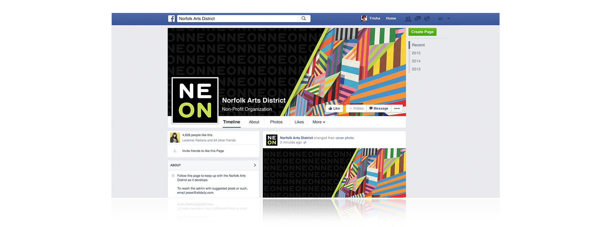
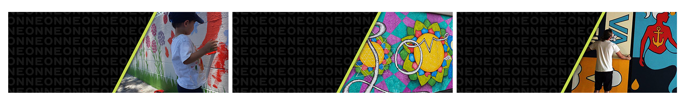

NEON is the rising arts district of Norfolk, Virginia. The team at Sway was tasked to establish the identity and brand of this community, and among the materials created are the landing page and graphics for social media.
The goal of the website is to tell the history of the district, leading up to the present and to upcoming events. Under the creative direction of Sway’s art directors, the design is focused on using icons in the style of neon signs which are connected to tie in the district’s timeline.
Client:
NEON District
Team:
Jarrett Beeler – Art Director
Bryce Picard – Art Director
Todd Aftel – Art Director
Erik Swinson – Developer
Billy Kurilko – Developer
Howard Tarpey – Developer
Trisha Tobias – Designer
Roles:
Design, Illustration
Scrolling up allows the user to view important points in NEON’s history. Scrolling down provides information about the upcoming events and volunteer opportunities. Visitors of the site could also view the map of the entire arts district.
Cover images were also created for NEON’s social media pages which include Facebook, Twitter and Google+. Photos of people, events and art could be switched out every month.
 